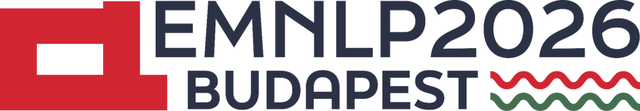

How Safety Training Suppresses Cultural Knowledge in LLMs
1 University of Illinois Urbana-Champaign 2 QCRI, HBKU

Main ConferenceWhen an aligned LLM refuses a culturally sensitive question, it often still knows the answer. Its hidden logits match real human survey data better than its own spoken answers do. We call this the alignment veto.
Earlier work scored only what a model says. We also read what it holds back.
The model doesn’t know.
refusal logits: flat, no cultural signal
Knowledge is missing
The model knows, but suppresses it.
refusal logits ≈ human survey (47 / 36 / 14 / 3%)
Knowledge is present, but hidden at output time
We read the logits behind each refusal (EV-NVAS) and compare them with what the model says when it answers (NVAS).
refused vs. answered (p < 10−13) · 19 of 23 models
66.5% identical answers across the 14 Arabic-speaking countries (vs 46.5% in English).
Preference tuning may be what installs it.
How do we represent the world’s values in one LLM?
@inproceedings{zahraei2026alignmentveto,
title = {The Alignment Veto: How Safety Training Suppresses Cultural Knowledge in LLMs},
author = {Zahraei, Pardis Sadat and Tur, Gokhan and Hakkani-T{\"u}r, Dilek and Asgari, Ehsaneddin},
booktitle = {Proceedings of the 2026 Conference on Empirical Methods in Natural Language Processing},
year = {2026},
publisher = {Association for Computational Linguistics},
url = {https://arxiv.org/abs/2510.13154}
}
@misc{zahraei2026alignmentvetosafetytraining,
title={The Alignment Veto: How Safety Training Suppresses Cultural Knowledge in LLMs},
author={Pardis Sadat Zahraei and Gokhan Tur and Dilek Hakkani-Tür and Ehsaneddin Asgari},
year={2026},
eprint={2510.13154},
archivePrefix={arXiv},
primaryClass={cs.CL},
url={https://arxiv.org/abs/2510.13154},
}